Tres fracciones del Tenebrio molitor. Un ciclo sin residuos. Cada producto certificado, trazado y listo para integrarse en su fórmula.
GreenCore fracciona la larva de Tenebrio molitor en tres ingredientes distintos. Cada uno con su propia ficha técnica, certificación de trazabilidad y cálculo de huella de carbono por lote.

Novel protein hipoalergénica con 65–72% de proteína bruta y digestibilidad ileal estandarizada superior al 90%. Sin pescado, sin soja, sin contaminación cruzada con alérgenos comunes.
Validada por la Universidad de Zaragoza y la UPV. Conforme al Reglamento (UE) 2017/893. Sello Tenebrio Trazado con código QR por lote.
| Proteína bruta | 65–72% |
| Digestibilidad ileal | >90% |
| Grasa bruta | 12–18% |
| Humedad | <8% |
| Cenizas | 4–7% |
| Quitina | 2–5% |
Cada producto de GreenCore lleva el sello Tenebrio Trazado: un código QR con el historial completo del lote, la huella de carbono verificada y la documentación regulatoria preparada.
Historial completo auditable: sustrato, parámetros de cría y controles de calidad. Facilita homologaciones y auditorías.
Datos reales, no estimaciones. Listos para integrarse en informes CSRD y cómputo de Scope 3.
APPCC conforme a directrices EFSA. Documentación completa lista para compras y calidad.
Trabajamos con su equipo de formulación hasta que la fórmula funcione. Sin esperas, sin intermediarios.
Muestra técnica gratuita enviada en 5 días hábiles, con ficha técnica y certificación de trazabilidad por lote.